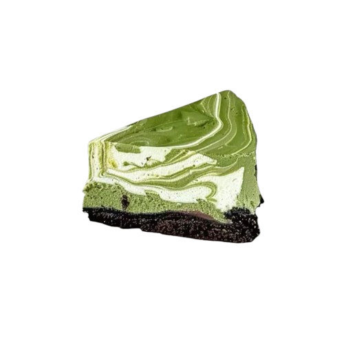
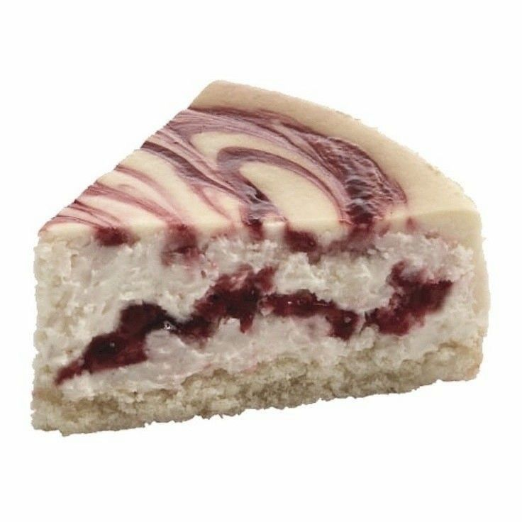
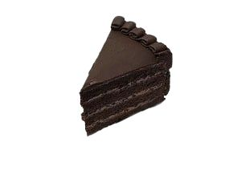
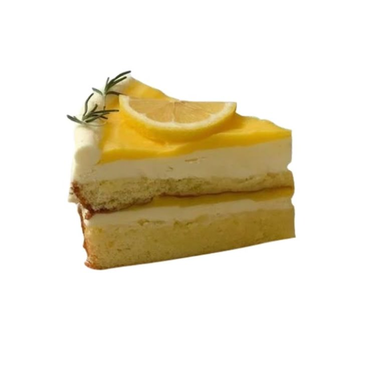
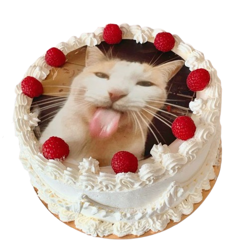

Conheça sabores que abraçam.

Base de biscoito sabor chocolate amargo com uma cremosa mousse de matcha com baunilha.

Massa branca macia recebe um creme de cream cheese sedoso, coroado por frutas vermelhas em calda artesanal, trazendo o equilíbrio perfeito entre doçura, acidez e frescor.

Essa fatia é para aqueles que deixam um hectare no coração para o chocolate. Cada fatia combina a leveza da massa com a doçura que escorrega do recheio cremoso.

Massa de bolo branca, recheada com um creme de limão e cream cheese de textura aveludada e acidez equilibrada. Finalizada com merengue de limão suíço.

Perfeitos para o Dia do Bolo de alguém! Possui uma massa branca aromatizada com especiarias e um recheio de compota de framboesa com beijinho. Você pode escolher a imagem que quiser!
A Miaulatte™ ainda está em fase de crescimento, então gostariamos de receber sugestões para inserirmos novas delícias em nosso cardápio. Lembrando que pode ser uma receita original, um título criativo ou um feedback nos dizendo a sua opinião sobre nosso café!
Entrar em Contato e Ler Políticas